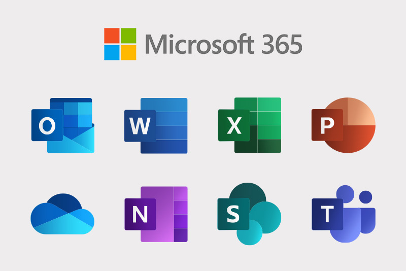

flowchart BT
U([User]) <--> C[Chat]
C <--> A1[Agent A]
C <--> A2[Agent B]
C <--> A3[Agent C]
A1 <---> D[(Data)]
A2 <---> D
A3 <---> D
A1 <---> T[[Tools]]
A2 <---> T
A3 <---> T

I’ve been thinking a lot about how fundamentally the way I work has changed in the last six months, and how starting a company and being my own boss has made it possible.
Work “on the inside”, at least from what I can tell, is lagging behind. Enterprise adoption of AI faces serious security and governance challenges before it is adopted into non-tech adjacent companies, and that means most people working inside companies haven’t seen what AI can really do. I think skepticism is justified until you experience it yourself.
But I own my projects and the IT department (it’s just me)… So I can do whatever I want.
Maybe that gives me a worthwhile perspective on where work might be headed, because I am working, a lot, but it’s… like, just different, man. Here are some thoughts.
Do these products make sense anymore?
I wasn’t born in tech, so my career started in the Microsoft world inside a non-tech company. No git, no markdown, no code. Excel, Word, PowerPoint were the intellectual currency passed between managers, and everyone joked about it, but nobody seemed to have an alternative to offer, either.
Personally, I can’t see why I would use these products ever again. They don’t really make sense anymore.

These kinds of products are built for a world where the average user doesn’t have a way to compile their work into rich outputs without significant investment in programming. But technology has blown past that requirement, and I’m left questioning what role these tools have left.
For example, when I need a professional document, it might be internal documentation, or a contract, or a scope of work—documents where my writing voice doesn’t really matter1, I just need to get information professionally formatted and sent to some stakeholder—I don’t open a Word document and start typing. I chat to my agent. I explain what I need done and I say I need it compiled to a PDF report. The agent knows my formatting and templating, it knows where to do this work, it knows what tools to use to compile to PDF, and it is an expert at the syntax required to do so. I work on the document interactively with the agent, watching the PDF continuously compile in sync with changes. I iterate on the document until satisfied. I then read through it, make final manual edits, and then the job is done. In 10% of the time, I have a better document than I would have bothered to write myself. Faster and better.
If I need a slide deck for a presentation, I don’t start clicking around in PowerPoint. I chat with my agent. I get it to generate an HTML presentation. It knows the styling and template, so all the company faff will be included by default. I just need to iterate on slide content with it. If the agent needs detailed background on the project, I tell it where the code lives, and it reads up. No more explanation required.
If I need some numbers crunched, I don’t open Excel and give myself eye strain. I open a chat. I point my agent to where the data lives, whether it’s on my machine or the web, and it inspects the data, generates a script on the fly to analyze it, and gives me the information I asked for in a minute or so.
If I need a repeatable analysis in an actual project, then spreadsheets are already out of the question anyway, it’s a coding job. And surprise, surprise, the coding agent is very good at that, too.
So if all this work, apart from real coding projects, because I still work at my desk for that, amounts to open a chat, I don’t see what the old tools are for.
Anthropic and OpenAI are adding integrations into Microsoft’s productivity suite, but I’d be surprised if any of them use it. They know it’s not necessary, anymore, but there’s still huge money to make in the meantime.
I’m organized now, apparently
And I’ve not just replaced those old tools… I’m also doing a bunch of things that I never would have bothered with before.
I don’t take notes. Or at least I didn’t… But now taking notes means opening a chat. The agent commits the notes into my Obsidian vault, which stores a knowledge graph of all the goings on in my business, key projects I’m working on, areas of learning, blog post ideas, and whatever else I throw at it. The agent can also read email exchanges from my business account, sends me daily nudges about priorities, and keeps the knowledge graph up to date without me needing to ask.
I can ask my agent to research a topic I’m interested in and create an HTML or PDF report for me to read. I’ll go out for a run and when I get back it’s all done, and I have not only the report, but a conversation partner juiced to the gills with the relevant context.
I do a lot of this from my phone. I don’t need to open apps, move files around, click and drag elements on a screen… All that is over for me. And good riddance!
This isn’t AI psychosis—I’m not running 1000s of agents overnight, maxing out multiple Anthropic subscriptions on bonkers projects for clout on X. I’m just doing the stuff that helps me work better, and it’s currently costing me 20 bucks a month. The rest of the engagement-bait oriented stuff falls away pretty quickly when it doesn’t actually help you get good work done. Experiment, keep the good stuff, drop the rest, and move on.
And to stress my real point here—not only can I work at a pace that was previously inconceivable—it is universally a better experience. I don’t miss the spreadsheets, or the PowerPoints, and you’d have to pay me to go back.
Nearly headless software
The experience I’ve had with all this has led me to believe that many applications are going to become, nearly or completely, “headless”—lacking any serious frontend—and be much better for it. If I can ask an agent to configure and run complex applications from my phone, it won’t be long before I stop opening the web-app altogether, and just open a chat instead. I’m more comfortable chatting on the couch than hunched over a screen navigating forms and fancy widgets. The agent can send me back the details, images, tables of data, whatever it might be. It’s just a better experience.
Unless the user interface is indispensable for the workflow (seismic interpretation is one such example, though there are doubtless many more across industries), an agent with access to the right data and the right tools will just do it, or ask for clarification and then do it. So, if you consider the most complex tasks you do at your job, unless they involve precise clicking based on your expert judgment… it’s couch potato time. Tell the robot what you want, grab a coffee, and it’ll ping you when it’s ready to discuss its findings. Iterate until completion.
I think that this will be the new shape of work: Agents controlling backend applications, and you just…opening a chat to ask for things. The chat interface (maybe a richer version of what we currently have—I have some thoughts there, but let’s be real, a million others do too) becomes the frontend hub of the backend spokes that your business uses to do work. If your ahem data ahem infrastructure is set up for this, it will transform your business completely.
Does this make the humans in the loop irrelevant? I don’t think so. It gives us longer levers to exercise our creativity and judgment with. Anthropic is hiring a lot of engineers, they’re at the cutting-edge and they still value that leverage. Those qualities will become your worth, not your ability to click and clack at a workstation. Expertise and good judgment is going to matter a lot. Long levers help you lift things, and break things, after all.
Problems on the inside
All this functionality is what coding agents already do, pretty much out of the box. The problem is already solved if you own the machine you are working on, and can install what you need to enable it… but this is where the friction begins at big companies.
How does enterprise get to widespread AI adoption? Deloitte’s 2026 “State of AI in the Enterprise” report notes AI adoption is on the rise, but the infrastructure and governance around it is lagging. There are very real security concerns with AI agent deployment inside companies, which may be brushed under the rug in favor of adoption before they are solved.
Big tech will invest billions into cracking this market, because they’re already working in the new way, and they know there is no going back.
Meanwhile, at least outside of Silicon Valley, startup founders and the… curious unemployed (I drift each day on which of those categories I place myself in) are the ones playing around most actively in the real AI sandpit, and discovering the new shape of work.
Maybe AI on the inside still sucks, but boy am I moving fast and having fun out in the wild (AKA, my couch).
Footnotes
For any emails, messages, social media posting or this blog—basically anywhere with an expectation that it is me communicating—AI writing is a strict no-no for me. I find AI writing (at least in the context of social media engagement farming) pretty awful to read, and I think using it without declaring it is dishonest, disingenuous, and disrespectful. AI generated posting without clear disclaimers should be shunned and removed from social media sites, in my view. When I catch myself using a “it’s not just this—it’s also that” framing, a part of me dies inside, but it does happen. I also enjoy em-dashes and think they help my writing flow better, though my writing skills are a work in progress.↩︎